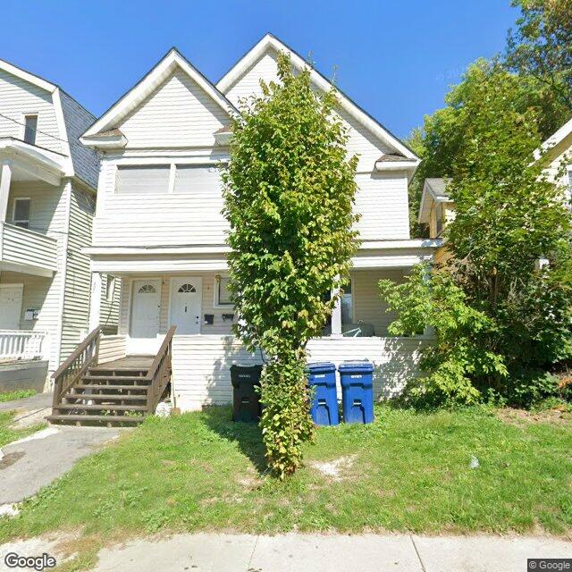

Property entry
400 Burdick Ave
Published 2026-10-11T13:03:11+00:00
Parcel key: 003-17-350

City records
Matches use parcel IDs, normalized addresses, or nearby coordinates. Confirm a match against the source record before relying on it. Publication dates are not source-data dates.
Vacant properties 1
- Latitude
- 43.07778293
- Longitude
- -76.15602244
- ObjectId
- 685
- Owner
- MD Hamiduzzaman
- OwnerAddress
- 721 Hillside St Syracuse, NY 13208
- PropertyAddress
- 404 Burdick Ave
Rental registry 2
- Latitude
- 43.07815209
- Longitude
- -76.15594669
- NeedsRR
- Yes
- ObjectId
- 988
- PropertyAddress
- 365 Willumae Dr
- RRisValid
- No
- Latitude
- 43.07797434
- Longitude
- -76.15550336
- NeedsRR
- Yes
- ObjectId
- 991
- PropertyAddress
- 355 Willumae Dr
- RRisValid
- No
Code violations 0
No matches stored for this feed. The feed or address matching may be incomplete; this is not confirmation that no records exist.
Unfit properties 1
- Latitude
- 43.07778293
- Longitude
- -76.15602244
- ObjectId
- 152
- SBL
- 003.-17-36.0
- address
- 404 Burdick Ave
- area_involved
- exterior
AI image observations (unverified)
These observations are generated from an image, not an inspection or an official code finding. No human verification is recorded here.
Image capture date: Not recorded. The entry publication date does not establish the age of the image.
Automated image description
{ "summary": "The property appears to be a two-family dwelling with white siding, exhibiting some wear on the front wooden stairs and patchy areas in the front lawn.", "property_type_guess": "two_family", "visible_conditions": [ "White siding on the main structure", "Two distinct front entry doors with mailboxes", "Wooden front stairs and porch railing", "A mature tree in the front yard", "Grass lawn with some bare patches and weeds", "Multiple trash/recycling bins present near the tree" ве], "condition_scores": { "roof": "not_visible", "siding_or_facade": "fair", "windows_doors": "fair", "porch_or_entry": "fair", "yard_or_lot": "fair", "trash_debris": "none_visible", "vegetation_overgrowth": "none_visible" }, "visible_flags": { "boarded_windows_or_doors": "no", "fire_damage_visible": "no", "structural_damage_visible": "no", "vacancy_signs_visible": "no", "active_construction_visible": "no" }, "possible_unrecorded_issues": [ "Weathering and wear on the wooden front stairs", "Bare patches and weeds in the front lawn" ], "image_annotations": [ { "label": "Weathered wooden stairs", "reason": "Visible wear and weathering on the wood of the front stairs.", "bbox": { "x": 0.05, "y": 0.48, "width": 0.35, "height": 0.3 }, "confidence": "high" }, { "label": "Patchy lawn with weeds", "reason": "Areas of sparse grass and visible weeds in the front yard.", "bbox": { "x": 0.0, "y": 0.58, "width": 0.9, "height": 0.4 }, "confidence": "high" } ], "needs_human_review": "false", "confidence": "high", "caveats": [ "Portions of the roof are obscured by a large tree", "The rear or sides of the property are not visible from the image angle" ] }
Property type guess: unclear
Visible conditions
- No items reported.
Condition scores
No structured condition scores available.
Visible flags
No structured visible flags available.
Possible image-only flags
- No items reported.
AI review boxes
- No items reported.
Review reasons
- No items reported.
Image quality
- Available
- True
- Bytes
- 119585
- Needs Rerun
- False
ACS tract context
Census Tract 2; Onondaga County; New York
- Housing units
- 1686
- Median gross rent
- 146700
- Median household income
- 51848
- Poverty rate
- 28.1
- Renter-occupied share
- 50.1
- Total population
- 3511
- Vacancy rate
- 14.7
OpenStreetMap nearby
meter search radius
OpenStreetMap lookup failed: HTTP Error 406: Not Acceptable